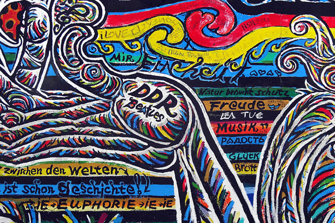

Urban Art Fair
Publié le 4 juin 2020

La cinquième édition aura lieu au Carreau du temple du 20 au 23 septembre 2023. L'occasion de faire de belles découvertes ou d'admirer les oeuvres d'artistes incontournables.
L'innovation de cette foire est la pluralité des événements qui en découle. Pour l'occasion, le Carreau du Temple réitère les projections cinématographiques autour du street art.
Cette année la foire se déplace aussi hors les murs avec la présentation inédite de l'exposition « Cannot be Bo(a)rdered » à découvrir en entrée libre du septembre au 7 novembre 2020 à l'Espace Commines. Une trentaine d'artistes venus de Singapour, Malaise et Indonésie on mis en place cette exposition autour de la culture du skate board.